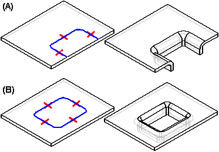
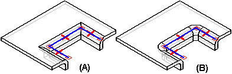
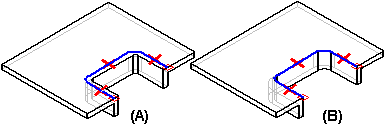

Constructing drawn cutouts
You can construct a drawn cutout using an open profile (A) or a closed profile (B).

The ends of an open profile must theoretically intersect a part edge. A closed profile cannot touch any part edges. A drawn cutout can be constructed only on a planar face. You can use the Drawn Cutout Options dialog box to specify punch radius, die radius, and taper options.
When you draw the profile for a drawn cutout without arcs, you also can specify whether the corners are mitered (A), or rounded (B) using the Automatically Round Profile Corners option on the Drawn Cutout Options dialog box.

When you construct a drawn cutout, the sidewalls are constructed such that they lie inside the profile (A). After the feature is constructed, you can use the options to specify that the sidewalls lie outside the profile (B).

Drawn cutouts cannot be flattened.